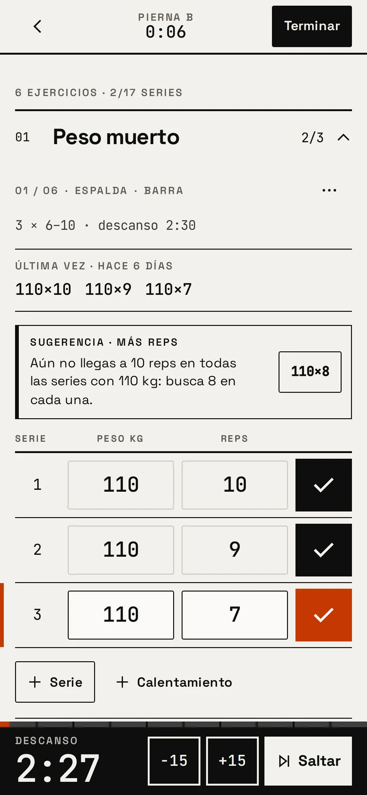
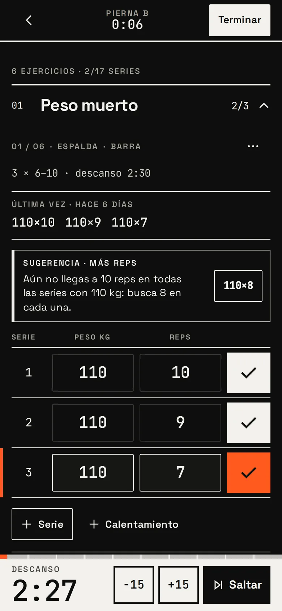

Sesión activa
Una serie, un toque.
Peso y reps prellenados, historial de la última vez a la vista y una sugerencia concreta para la siguiente serie.
- Descanso automático±15 s
- Aviso de finsonido + destello
- Récordsen vivo
- AvanzadoRIR / RPE · supersets

